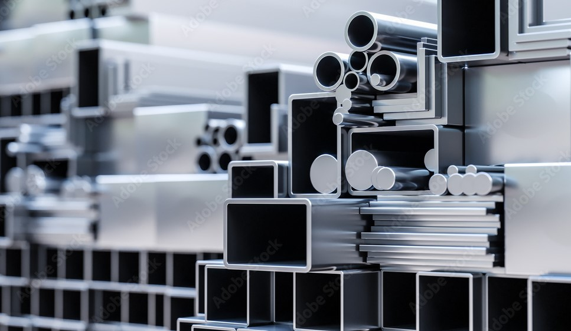
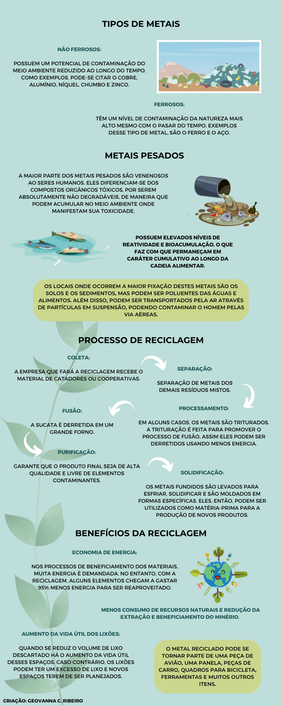

Hoje em dia, o metal é utilizado de várias formas devido à sua versatilidade, além de ser símbolo de durabilidade e resistência. O que faz dele essencial em diversos produtos e processos da indústria moderna. Porém, a mineração e o descarte desse material causam vários danos aos recursos naturais do planeta, além de apresentar riscos para a população que vive ao lado de mineradoras, de modo que se torna essencial realizar a reciclagem de metais.
A grande vantagem do reaproveitamento de metais é que eles são 100% recicláveis, e esse processo pode ser feito inúmeras vezes, sem que o material perca a maioria das suas propriedades. Ou seja, não há um limite para a reutilização do metal e essa atitude ainda pode ser muito proveitosa para a sua indústria, além de proteger o meio ambiente.
Um fato relevante é que as latas de alumínio representam grande parte dos metais reciclados no Brasil e no mundo. E em uma pesquisa de 2017, realizada pela Associação Brasileira dos Fabricantes de Latas de Alumínio (Abralatas), pelo Can Manufacturers Institute (CMI/EUA) e pela Beverage Can Makers Europe (BCME/Europa) mostrou que o Brasil é o país que mais contribui com a reciclagem de alumínio no mundo todo.
